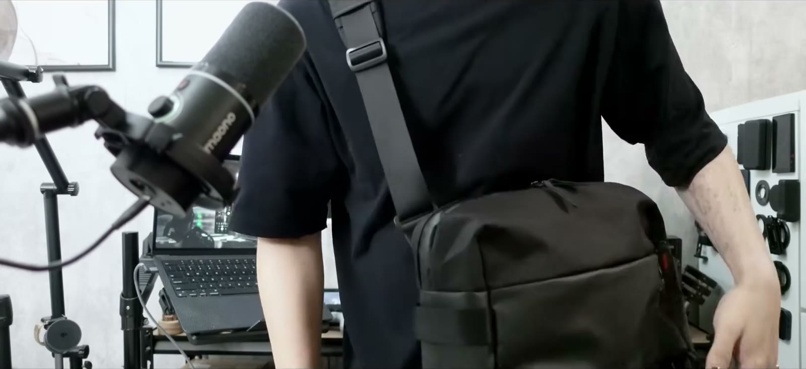

かばん
01 tomtoc Explorer T21 EDCボディバッグ（10L／Lサイズ）↗動画のもくじ
0:40リュックとトートのあいだ 1:56外観とスペック 3:34各種収納 6:50実際に背負う 8:01惜しい点3つ
※ この回は、かばんそのものの紹介です。中に入れているものは持ちものの一覧にまとめています。
※ 商品リンクにはAmazonアソシエイトを含むアフィリエイト広告が含まれます。価格・在庫はリンク先をご確認ください。
ほかのかばん
2026.08tomtoc アーバンEX T77 2026.05StandardProducts 2wayバッグ｜iPad mini編 2026.05読書かばん その２ 2026.04読書かばん